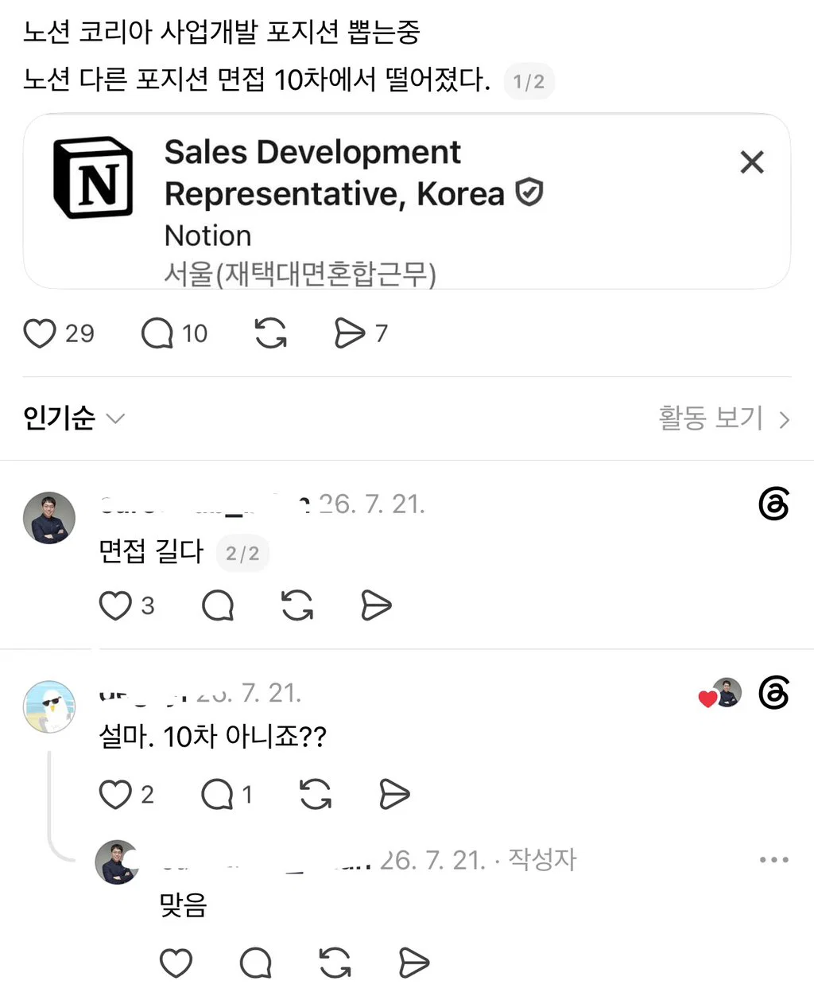

면접 10차에서 떨어짐
댓글
9차까지 통과 한 면접자분들 모두 축하합니다. 마지막 10차 면접의 주제는 正 입니다.
주어진 과제는 오후 3시까지 제출 최종 대표 면접입니다.
체용시 연봉 3500만원, 4대보험,의 혜택을 받을 수 있습니다.
면접 10차면 사실상 인턴 1개월인거 아니냐
드라마 오징어게임도 생존게임횟수가 6회인데 시1빌련들 ㅋㅋㅋ
저러면 딴 회사다니는 경력직은 어캐뽑음?
잘해서 바쁜 경력직들은 과제 면접 하나만 있어도 못한다하던데
6시 이후에 면접 보는 곳도 있으니까...
대형로펌도 면접 1회로 뽑아서 1.5 스타트로 주는데.. 넘 빡빡하다
4번째 면접은 존재하지 않습니다.
10차면접이면 어쩔수없다처럼 상대방 죽이는게 빠르겠네ㅋㅋㅋ
면접 10차 독립시행 확률뚫어라..ㅋㅋ ㄹㅈㄷ넼ㅋㅋ
몇배수 일진 모르겠지만
https://www.reddit.com/r/InterviewCoderHQ/s/ifTyzjrzR3 일단 여기선 개발자 5차까진 봤다는거같은데 뭘까
0b10차
애플이 ㅅㅂ 5~10 회정도 면접봄
나는 1차에서 떨어짐
국내 회사중에서도 3번 이렇게 보는데 있음
2번 보는거도 개 좆같은대 왤케 많이보냐?
이렇게 지랄맞게 봐도 지원자들이 존나개 많기때문이지
노션은 아닌데 국내 스타트업 중에서 면접 나도 5번인가 본 곳 있음. 커피챗이라면서 직접 갈테니 얘기 하고 핏 맞춰보자 이지랄하더니 한 3번째 이후부터는 이 새끼들이 ㅈㄴ 이상하게 나오길래 어떻게 나오나 하고 나도 벼르고 보고 있었는데
처우협의할 때 되니 어쩌고 저쩌고 하더니 가뜩이나 적은 현직장 연봉에서 천만원 깎고 스톡옵션 이지랄하길래 바로 관둠. 저런 좆같은건 대체 어디서 배워와갖고 하는건지
그럴리가 있나